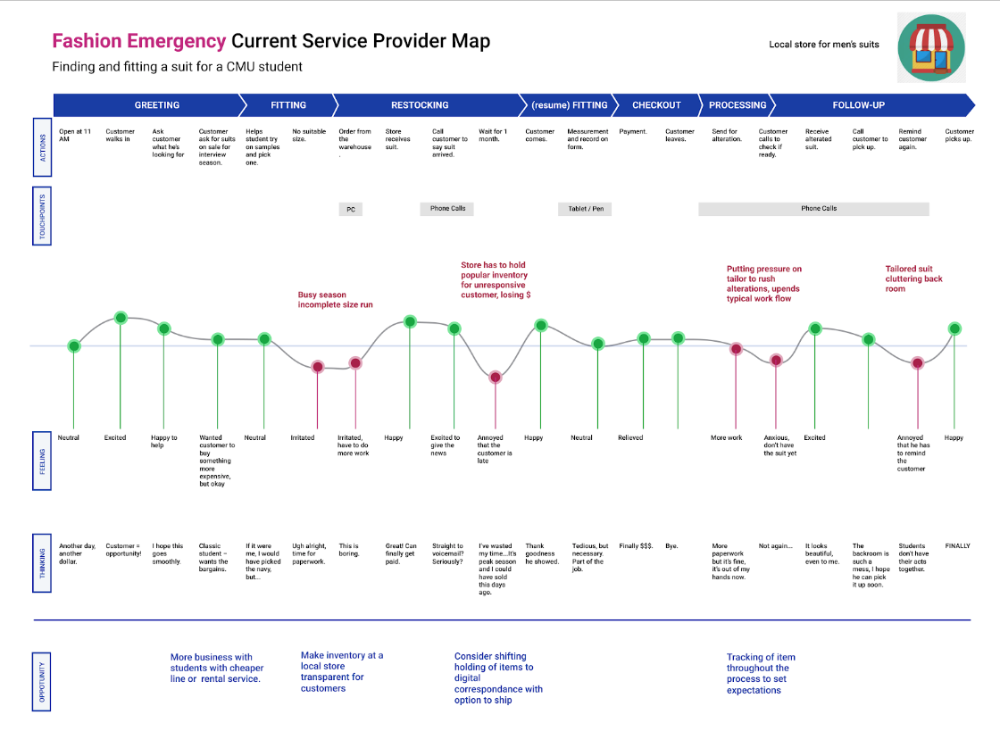

I usually start from learning about the business through business model canvas and competitors analysis. Sometimes I'd do some design research on relevant topics through literature review or analogous domain case study. Afterwards, I'd conclude the business goal and design principles to follow.
Conducting user research requires a plan for methods and goals. Methods I've used include: log analysis, interview, contextual interview/guided tour, card sorting, design artifact review, and surveys. While conducting research, keep in mind that our goal is to understand the "why" behind behaviors. [See a tip for interviewing experts]When interviewing experts, mentioning key concepts and acronyms can quickly help them establish trust for you and start to share more.
Synthesizing helps a team to enhance their understanding, and get everyone on the same page. Common methods include: insight statements, user journey map, persona, job stories, models (flow model, concept map), abstract laddering, and affinity mapping etc.
Having a clear definition of success is half way to success. HMW statements shows the general goal. Success metrics can be defined from a business perspective, user perspective, and design perspective. I also use methods like future press release, customer letter, or personality slider to seek for inspiration and envision the future as a team.
While ideating, I'd put up all previous result on the wall for reference (aka. walking the wall). Ideating is about diverging, saying "yes, and...". And it's beyond brainstorming. Sketching in limited time (Crazy 8, Solution Sketch), collaborating with other stakeholders (Co-create, Round Robin), and self-challenging (reverse assumptions, 20 questions) are all ways to boost creativity.
We can either narrow down by voting, heatmap voting, effort-impact matrix, or by initial validation. Role-plays and storyboards can help inspect ideas in the context. Involving users (speed dating) at this early stage is also extremely beneficial for deciding on a direction.
Ideating for AI requires a basic understanding of available technology and the data. One method I learned at CMU is matchmaking. We can either start from the user need, translate user need/behavior into data need, or start from the technology/data, analyze the capability of available technology and match it to a user need.
For many problems, AI is not a better solution than heuristic ones. We should always generate a non-AI solution and compare them on: user value, ease of development, risk of error, business impact, creativity, and user satisfaction. Even with AI, we need to balance automation and augmentation. We can conduct user research to find the sweet spot.
After picking a direction, we can define requirements for the development from the user/design perspective.
■ Loss function is crucial for machine learning models, designers should analyze consequences of different metrics from the user perspective and help figure our the threshold for each.
■ We can help identify potential bias, evaluate features, and even prevent overfitting by reviewing the raw data and the characteristic of the model.
■ Users, the crowd, and experts are common sources of labeled data. As designers, we can provide input on motivation, usability, and labeler's diversity.
A popular testing method is a/b testing . For early stage products that has not shipped, we also test through wizard of Oz, think aloud, heuristic evaluation, desirability test, 5 second test, cognitive walkthrough, as well as review sessions with PM, development team, and other stakeholders. A structure to organize findings is feedback grid. While testing, we need to constantly review success metrics and universal design principles like error recovery, inclusive design etc.
Clarifying the relationship of the user and the product helps users build a proper expectation and avoid breakdowns. Usually, an AI product should be an ally who has a same goal, a cooperator who only helps when you need, and a learner who improves gradually with your input. User research can help us understand users' current mindset.
If we don't pay enough attention, it can be easy for our design to harm people's privacy or break the social norm under certain circumstances.
Explanation can help users make decisions, identify errors, and build trust for the product. We can explain the result by showing data source, reasons, examples, confidence level, or providing an interactive tools like Google's "what if".
Although AI products usually contains automated workflow, it's still essential to give users full control. User should always be able to opt out, customize, and edit. What's more, as a designer, we should keep in mind that user engagement and interaction is still the ultimate goal of our design.
There are 4 types of errors: user error, system error, context error, and bias. We can design to prevent and recover from them. A special situation we should avoid is that users may intentionally repeat the error if they find it amusing. The goal of error recovery is to make sure the experience is still good and trustworthy even when the system fails.
Users' feedback, no matter implicit or explicit, is crucial to help an AI system evolve. Designing a feedback mechanism can be challenging, especially for designing the motivation.